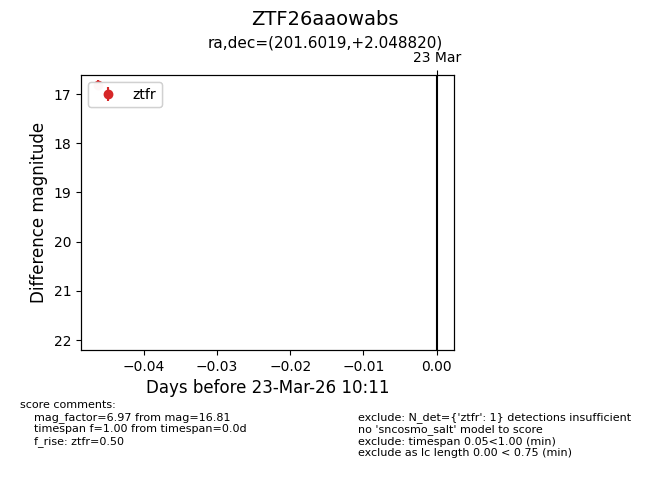
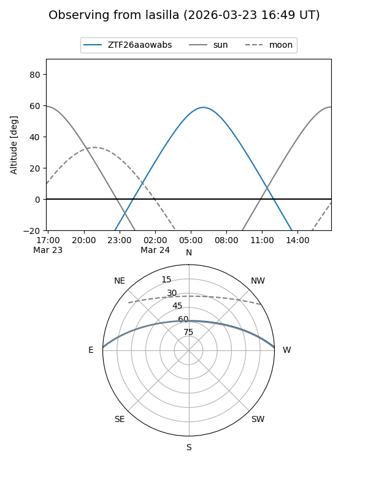
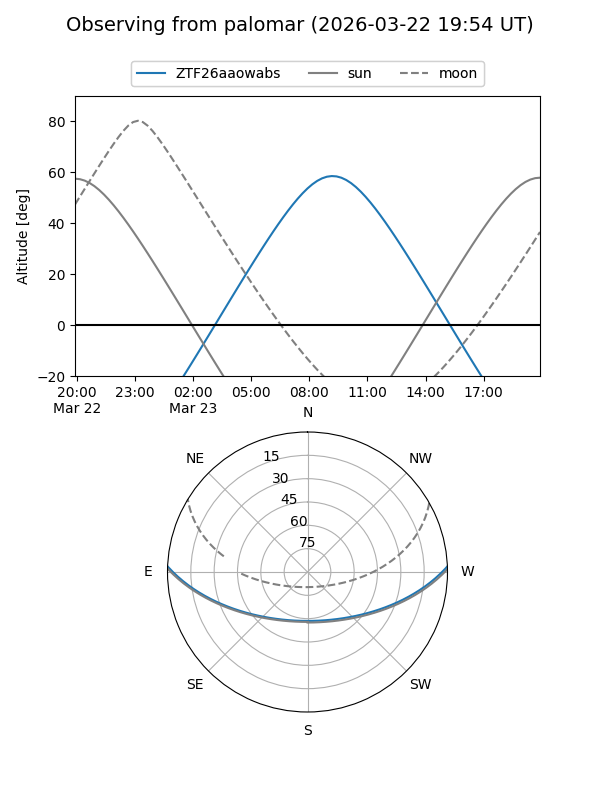

ZTF26aaowabs
Target ZTF26aaowabs at 2026-03-23 10:13
Aliases and brokers:
FINK: link
Lasair: link
ALeRCE: link
alt names
ZTF26aaowabs (ztf,fink_ztf)
Coordinates:
equatorial (ra, dec) = 201.6019,+2.04882
equatorial (HMS+DMS) = 13:26:24.45,+02:02:55.75
galactic (l, b) = (322.8768,+63.55825)
Flags:
Photometry:
last ztfr=16.81
1 ztfr detections
Lightcurve

Visibility


Additional plots